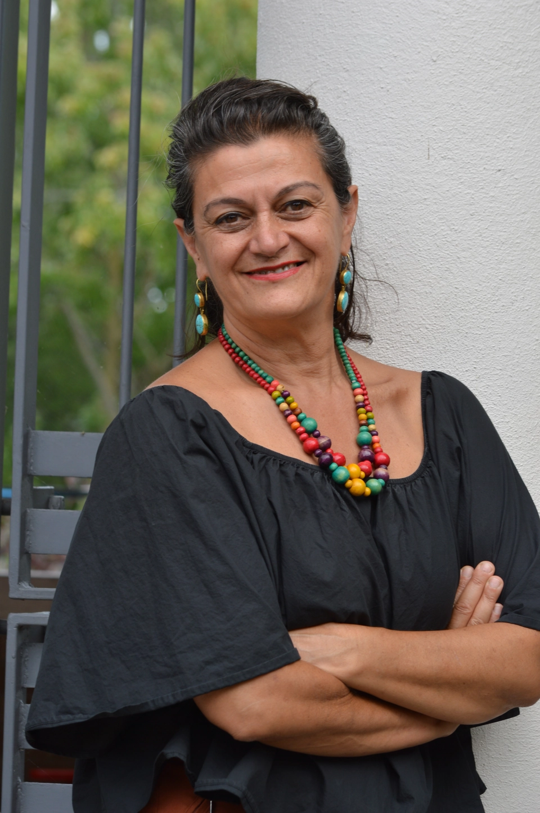

JUSTICE ÉCONOMIQUE
- Taxe des grandes fortunes
- Programmes de transition juste
- Protection des travailleur·e·s
Votre candidate dans
Laurier—Sainte-Marie
Nimâ Machouf
On essaie de nous convaincre qu’un monde plus incertain nous oblige à revoir nos ambitions à la baisse : qu’il faut choisir entre protéger notre portefeuille et défendre nos valeurs, entre nos emplois et l’environnement, entre notre sécurité aujourd’hui et notre avenir. Mais nous n’avons pas à choisir. Nous devons reprendre ce qui est à nous.
Le Canada est un pays riche. Nous avons les moyens de rendre le logement abordable, de créer et protéger de bons emplois, de maintenir des services publics solides et d’agir sérieusement contre les changements climatiques. La vraie question: nos moyens, à qui ils serviront? Au peuple ou à une petite poignée d'ultra-riches?
À force de crises, on finit par croire que les jeux sont faits d’avance et qu’on n’y peut pas grand-chose. C’est exactement comme ça qu’on finit par céder à d’autres notre voix, nos droits, notre argent, notre pouvoir.
Je suis ici pour nous rappeler une chose : l’avenir se décidera avec ou sans nous alors ne faisons à personne le cadeau de nous retirer. Notre voix, nos droits, notre argent, notre pouvoir, notre avenir : reprenons ce qui est à nous.
Nimâ Machouf
Nimâ choisit le NPD parce que c’est le seul parti politique à Ottawa qui peut transmettre ses valeurs progressistes, pour le peuple, pour l’humanité. C’est le parti fédéral qui rappelle au gouvernement de bien gouverner pas juste pour le PIB et la bourse, mais pour les gens. Notre démocratie doit servir à nourrir et loger toute la population, à nous garantir les soins de santé, et à défendre notre environnement.
Laurier–Sainte-Marie est un château-fort de la gauche au Canada. C’est ici que nous avons élu le premier conseiller de Projet Montréal et le premier député de Québec Solidaire. Nous avions déjà choisi le NPD pour nous représenter de 2011 à 2019, et notre député sortant était de l’aile progressiste des Libéraux. C’est à nous de souligner au gouvernement que de défendre le Canada, ça doit vouloir dire défendre le peuple.
Nimâ Machouf est épidémiologiste, spécialisée dans les maladies transmissibles. Activiste depuis la jeunesse, elle s’implique dans la société d’accueil, les associations étudiantes. Elle a siégé au CA des Médecins du Monde. Nimâ prend part à des missions ponctuelles dont la plus récente: la flottille Sumud de 2025 interceptée illégalement par Israël au large de Gaza.
D’origine Iranienne, Nimâ est née en France pendant les études de ses parents. Elle rentre en Iran à l’âge de huit ans. La famille Machouf doit plus tard quitter sa terre dû aux répressions politiques du régime des ayatollahs. Nous l’accueillons dès lors à Montréal où elle poursuit ses études et plante ses racines.
Nimâ s’implique en politique électorale dans la gauche depuis 2009 avec Projet Montréal et le NPD; son époux Amir Khadir est le premier député élu de Québec Solidaire. Candidate NPD dans Laurier–Sainte-Marie depuis 2019 elle arrive en 2e place derrière seulement le militant environnementaliste Steven Guilbeault. La population a cru à l’idée de convaincre le gouvernement de l’intérieur, mais Guilbeault lui-même se rend à l’évidence que ça ne marchera pas avec Carney. C’est donc à Nimâ Machouf de prendre la relève en 2026!
Nos priorités
